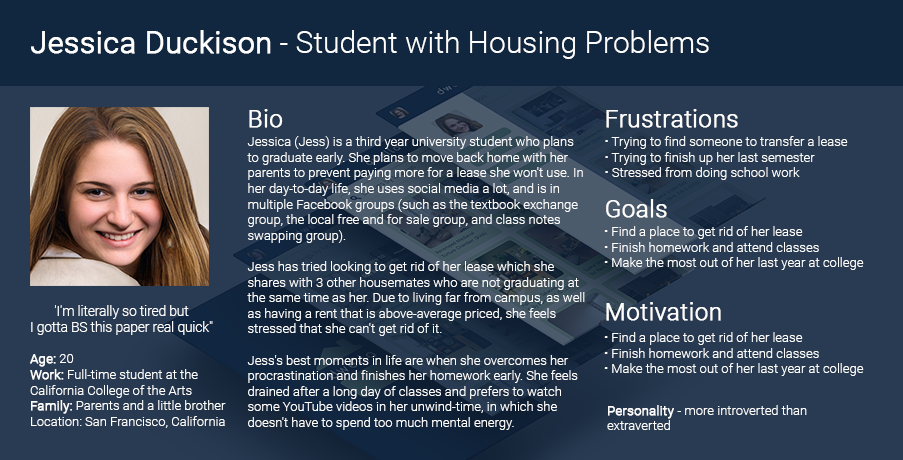
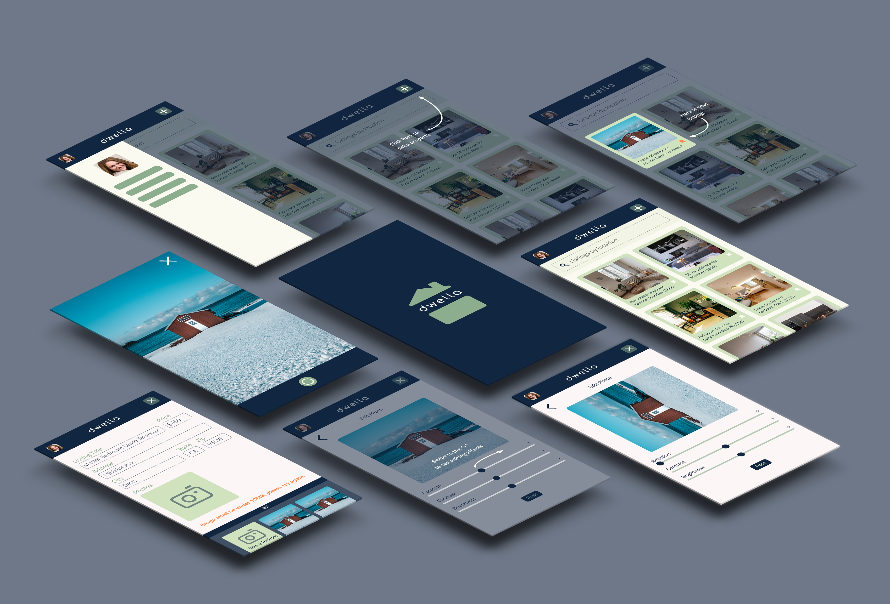
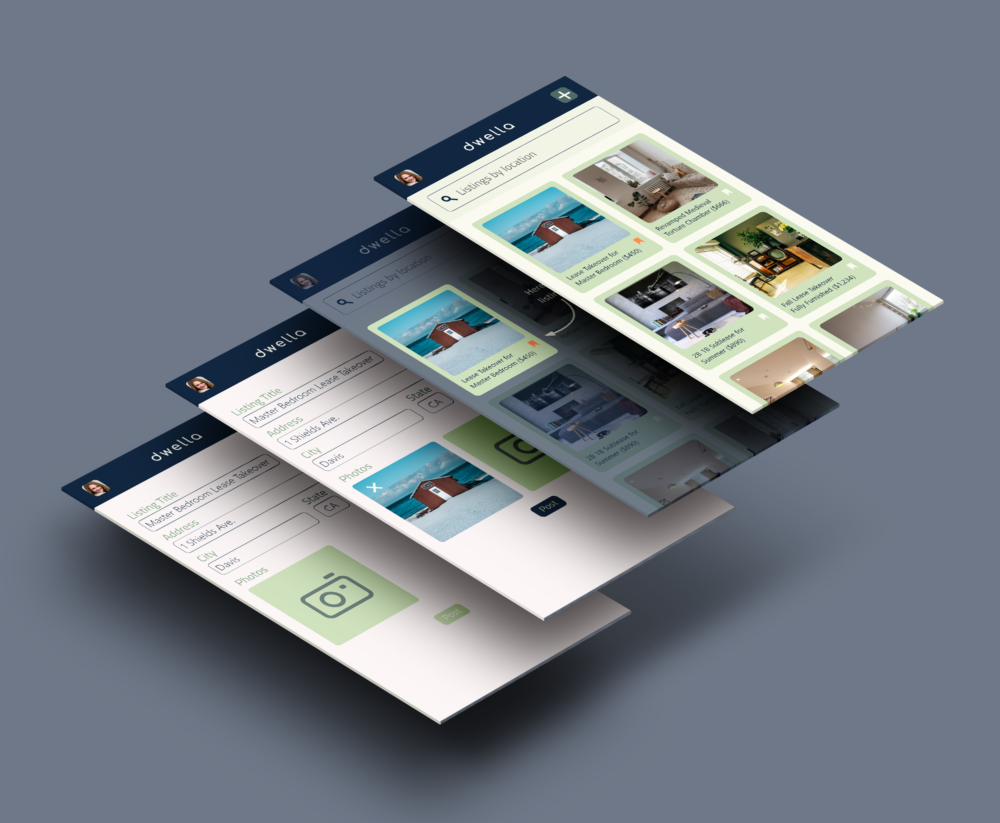
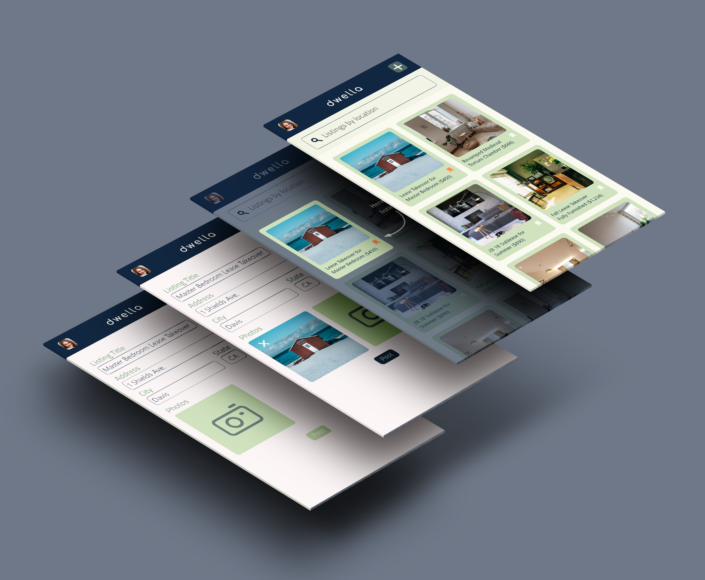

Adobe XD, Adobe Photoshop
Adobe XD, Adobe Photoshop
Dwella is an app used by people, particularly students, who need to transfer housing, sublease, or find subleased housing before official leases are over. It allows people to post properties, for lease-seekers to save listings, and for users to contact the posters. The goal of this specific user testing project is to allow users to highlight the photo uploading and editing when creating a new listing on Dwella.
A persona was constructed to portray an "ideal user" of the app, and is shown below. A moodboard oriented towards the target audience was then developed.
In terms of outreach and screening, I surveyed 4 individuals from 3 different age ranges. They are as follows:
Before opening the prototype to allow users to interact with the application itself, I briefed them about the project as well as Dwella’s general purpose. In terms of moderation, I sat a little behind them so I could see their facial features and screen interactions. After observing their interactions, I took note of:
Post-Test Questions included feedback regarding layout and color schemes. It could be said that there may be bias in screening, since I chose people that I know and interact with every day and that they all live in Silicon Valley (where technology and app use is very prevalent). I also did not have assistance in monitoring tests, so there may have been some interactions I missed.
Existing applications and organizations that partially solve the problem include Facebook Housing Groups (which gets confusing and content has little visibility since it gets easily lost as more content is uploaded), AirBnB (which is banned by many landlords from taking additional tenants into apartments), and SpareRoom (which only lists a couple cities like New York and LA, and doesn’t have as much of a student audience).
Changes to elements of the app includes sizing and typography changes (for increased readability). Buttons and image editing handles were also made larger for better accessibility. Instructional overlays were also adjusted for better and shorter wording, which allowed users to properly follow directions without losing concentration. The “submit” button was changed to post, since post has a greater connotation with the word “house.” All screens are shown below:
 
